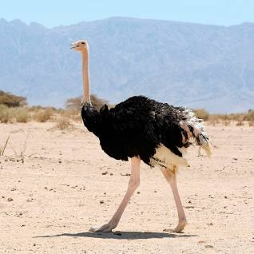

Ostrich

Ostriches are large flightless birds native to Africa. They are known for their unique physical characteristics and behaviors.
Physical Characteristics
- Size: Ostriches are the largest living birds, with males reaching heights of up to 9 feet (2.7 meters) and weighing around 220-350 pounds (100-160 kilograms).
- Feathers: They have large, flightless wings and long feathers that are soft and fluffy, often used in decorative arts.
- Long Legs: Ostriches have long, powerful legs that are adapted for running. They can run at speeds of up to 60 miles per hour (97 kilometers per hour).
- Two Toes: Ostriches have two toes on each foot, unlike most birds that have three or four toes. This adaptation helps them run efficiently.
Behavior and Habitat
- Habitat: Ostriches inhabit various habitats in Africa, from savannas and grasslands to deserts.
- Running: They are known for their incredible running speed, using their legs for both defense and escape from predators.
- Nesting: Ostriches create shallow nests on the ground where females lay their eggs. Males and females take turns incubating the eggs.
Diet
Ostriches are omnivores, feeding on a variety of plant matter such as leaves, seeds, and flowers, as well as insects and small animals.
Conservation Status
Ostriches are classified as "Least Concern" by the International Union for Conservation of Nature (IUCN), indicating they are not currently facing major threats to their survival.
Interesting Facts
- Eyes: Ostriches have large eyes, known for their size and their ability to see over long distances.
- Eggs: Ostrich eggs are the largest of all bird eggs and are used for various purposes, including food and decoration.
- Vocalizations: Ostriches make a range of sounds, including hisses, booms, and grunts, often during mating displays.